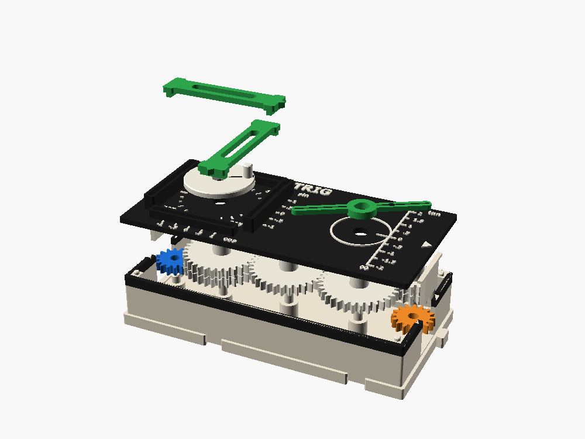
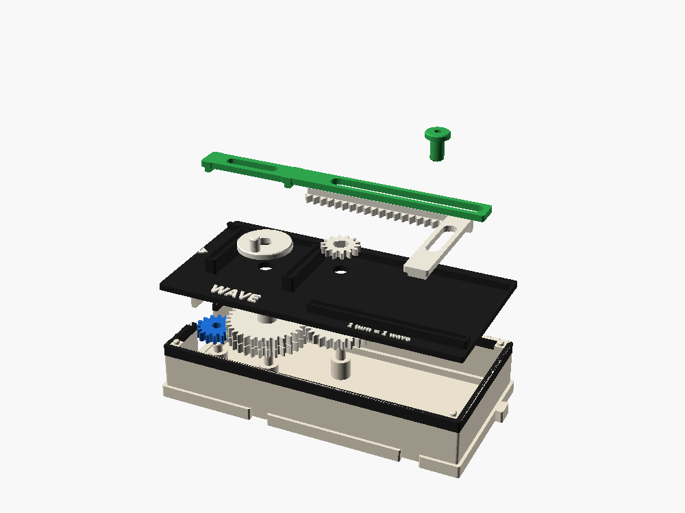
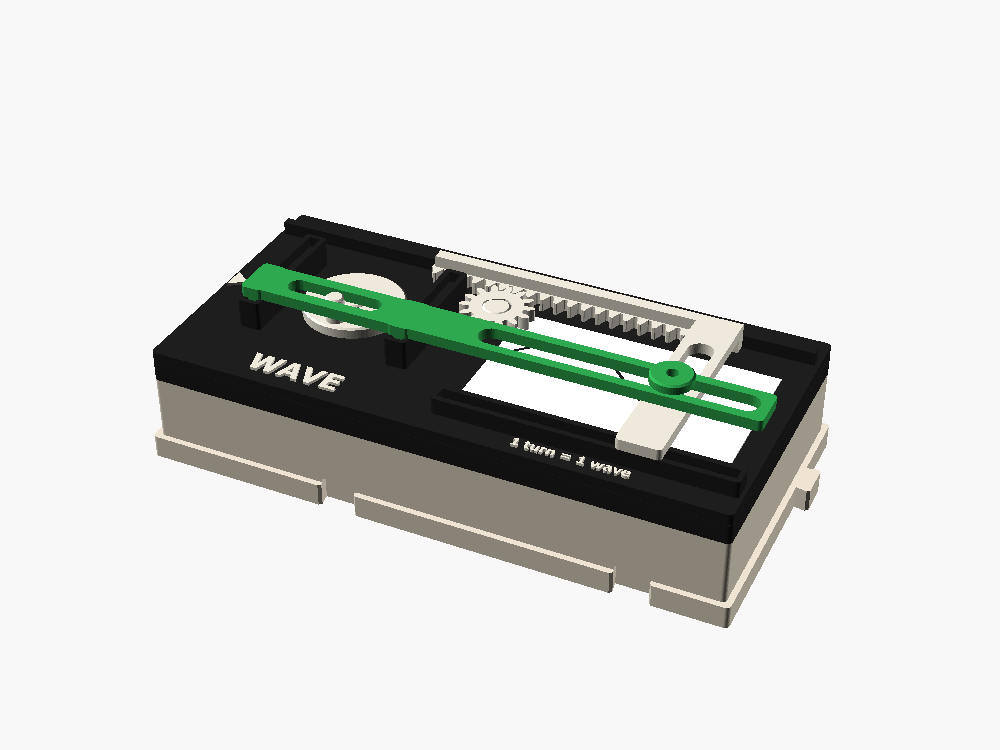

The trig box and the wave plotter
A gear turns a peg round a circle. Two sliders riding on the peg read cos and sin, a long arm crossing a ruler reads tan, and a second box draws the sine wave on a card: one wave for every turn of the crank.
Exploded views


What gets built

TRIG · 2 cells · W in, E out at ×1 · cost 6
Inside, R1 (the circle) and R2 (the tangent) are 32-tooth gears joined by a 32-tooth idler, so they turn exactly together, at half the port speed: one crank turn is one turn of the circle. A 16/16 stack brings the line back down to the E port. Five meshes, so the output runs forward.

WAVE · 2 cells · W in, end box · cost 4
R carries a peg 8 mm out that drives the pen bar. R drives P (28 teeth), whose 14-tooth pinion moves the carriage's rack 8 mm per radian, the same 8 mm as the peg. So the card gets y = 8 sin(x/8), true to scale. After one wave the rack runs off the pinion and the carriage stops; slide it back for the next card.
Reading each window
- θ: the black radius line on the disc points at a protractor ring printed round it (ticks every 15°). Forward on the line turns everything counter-clockwise, the way angles grow in maths.
- cos: the lower green yoke's south pointer reads −1 to 1 under the south rail.
- sin: the upper yoke's east pointer reads −1 to 1 beside the east rail. Where the two bars cross is the point (cos θ, sin θ).
- tan: the arm's hairline on the ruler, −2 to 2. One bar through the center, so both ends read the same ruler: tan repeats every 180°.
Infinity, handled honestly. Past 63° the arm runs off the top of the ruler, which is marked ∞. At 90° the arm is parallel to the ruler and never meets it. Keep turning and the other half of the arm comes back in at the bottom, at −2. A tan slider was rejected on purpose: it would have to jump from +∞ to −∞, and the force on it grows without limit near 90°, so it would jam.
How to draw the wave
Every gear in the system turns on a vertical axis, so the good options keep it that way.
| Option | Draws | Fits | |
|---|---|---|---|
| Card plotter. Pen in two slotted bars: sin yoke for y, rack-driven carriage for x. Card stays still. | The textbook graph, to scale | 2 cells | recommended, built |
| Turntable. A paper disc turns slowly under a pen on a sin yoke. | A sine wave wrapped round a ring | 1 cell | later, as a spirograph box |
| Paper tape pulled past a fixed pen. | An endless graph | Needs a horizontal roller and a roll outside the grid | rejected |
| Drum with paper wrapped round it. | The graph, rolled up | Pen must move up and down | rejected |
The card plotter wins because it draws the picture in every textbook and gets the proportions right for free. A moving pen beats a moving card: a card that slides under a fixed pen sweeps twice its own length and would run over the circle.
Things to try
- Read 30°, 45° and 60°: sin .5 / .71 / .87, cos .87 / .71 / .5, tan .58 / 1 / 1.73.
- Watch cos and sin trade places: cos is sin a quarter turn early. Shift the card a quarter wave (12.6 mm) and redraw: it lands on top.
- Put a ×2 box between TRIG and WAVE: two shorter waves per card. Frequency, before anyone names it.
Status
Both boxes are on main and fit-checked in OpenSCAD and render. Their own interference checks are clean at several angles, with only resting contacts. Still to verify on the first print: drop-in order and capture, the yokes' sliding friction, the 4 mm printed peg, the narrow rack and pinion, the pen with a real fineliner refill, and how cleanly the rack runs off at the end of a wave.